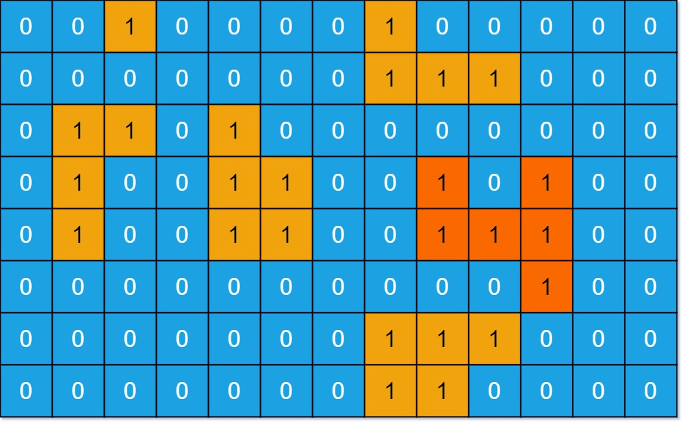

books / company-solutions / Depth-First Search
695. 岛屿的最大面积
| 题目信息 | 内容 |
|---|---|
| 难度 | 中等 |
| 核心模式 | DFS 洪泛求最大连通块面积 |
| 时间复杂度 | O(m·n) |
| 空间复杂度 | O(m·n) |
题目与约束
给你一个大小为 m x n 的二进制矩阵 grid 。
岛屿 是由一些相邻的 1 (代表土地) 构成的组合，这里的「相邻」要求两个 1 必须在 水平或者竖直的四个方向上 相邻。你可以假设 grid 的四个边缘都被 0（代表水）包围着。
岛屿的面积是岛上值为 1 的单元格的数目。
计算并返回 grid 中最大的岛屿面积。如果没有岛屿，则返回面积为 0 。
示例 1：

<strong>输入：</strong>grid = [[0,0,1,0,0,0,0,1,0,0,0,0,0],[0,0,0,0,0,0,0,1,1,1,0,0,0],[0,1,1,0,1,0,0,0,0,0,0,0,0],[0,1,0,0,1,1,0,0,1,0,1,0,0],[0,1,0,0,1,1,0,0,1,1,1,0,0],[0,0,0,0,0,0,0,0,0,0,1,0,0],[0,0,0,0,0,0,0,1,1,1,0,0,0],[0,0,0,0,0,0,0,1,1,0,0,0,0]]
<strong>输出：</strong>6
<strong>解释：</strong>答案不应该是 11 ，因为岛屿只能包含水平或垂直这四个方向上的 1 。
示例 2：
<strong>输入：</strong>grid = [[0,0,0,0,0,0,0,0]]
<strong>输出：</strong>0
提示：
-
m == grid.length -
n == grid[i].length -
1 <= m, n <= 50 -
grid[i][j]为0或1
核心不变量
一次 DFS 能把一整块连通的
1全部「淹没」，它返回的计数恰好就是该岛屿的面积。
完整推导
思路推导
-
遍历所有格子：双重循环扫描
grid，每遇到一个1，说明发现了一座新岛屿，从它出发启动一次 DFS 求面积。 -
DFS 求面积：从
(i, j)出发，若越界或当前格不是1就返回0；否则把当前格置0（淹没，防止回头重复访问），面积 =1 + 上 + 下 + 左 + 右四方向递归结果之和。 -
取全局最大：每求完一座岛屿就用它更新最大值
best；若整个矩阵全为0，best始终为0，正好符合题目要求。
小例子：示例 1 中最大的一块是中间偏左的岛，由 6 个 1 上下左右相连组成，DFS 一路淹没后返回 6。
Java 实现（maxAreaOfIsland）
class Solution {
private int m, n;
public int maxAreaOfIsland(int[][] grid) {
m = grid.length;
n = grid[0].length;
int best = 0;
for (int i = 0; i < m; i++) {
for (int j = 0; j < n; j++) {
if (grid[i][j] == 1) {
best = Math.max(best, dfs(grid, i, j));
}
}
}
return best;
}
// 返回从 (i, j) 出发这座岛屿的面积，并把访问过的 1 淹没为 0
private int dfs(int[][] g, int i, int j) {
if (i < 0 || i >= m || j < 0 || j >= n || g[i][j] != 1) {
return 0;
}
g[i][j] = 0; // 淹没，避免重复访问
return 1
+ dfs(g, i + 1, j)
+ dfs(g, i - 1, j)
+ dfs(g, i, j + 1)
+ dfs(g, i, j - 1);
}
}
复杂度
- 时间：O(m·n)，每个格子最多被访问一次，DFS 是常数次的四方向检查。
- 空间：O(m·n)，最坏情况整片都是陆地，递归栈深度可达 m·n。
易错点与扩展（面试高频考点）
- 忘记置 0：不把访问过的
1标记为0，会重复访问甚至无限递归、面积算虚高。 - 只走四个方向：对角线不算相邻，不要把 8 邻域写进来。
- 全 0 或空网格：
best初始化为 0，天然返回 0，不要漏掉没有岛屿的情况。 - 递归深度：m·n 最大 2500，递归通常安全；若追求稳健可改 BFS 或显式栈防爆栈。
- 面积累加方式：用 DFS 返回值
1 + 四方向累加最简洁，避免用全局变量漏加或重复加。
力扣原题
C++ 实现
class Solution {
int m, n;
int dfs(vector<vector<int>>& g, int i, int j) {
if (i < 0 || i >= m || j < 0 || j >= n || g[i][j] != 1) return 0;
g[i][j] = 0; // 淹没，避免重复访问
return 1
+ dfs(g, i + 1, j)
+ dfs(g, i - 1, j)
+ dfs(g, i, j + 1)
+ dfs(g, i, j - 1);
}
public:
int maxAreaOfIsland(vector<vector<int>>& grid) {
m = grid.size();
n = grid[0].size();
int best = 0;
for (int i = 0; i < m; i++) {
for (int j = 0; j < n; j++) {
if (grid[i][j] == 1) {
best = max(best, dfs(grid, i, j));
}
}
}
return best;
}
};
Python 实现
class Solution:
def maxAreaOfIsland(self, grid: list[list[int]]) -> int:
m, n = len(grid), len(grid[0])
def dfs(i, j):
if i < 0 or i >= m or j < 0 or j >= n or grid[i][j] != 1:
return 0
grid[i][j] = 0 # 淹没，避免重复访问
return 1 + dfs(i + 1, j) + dfs(i - 1, j) + dfs(i, j + 1) + dfs(i, j - 1)
best = 0
for i in range(m):
for j in range(n):
if grid[i][j] == 1:
best = max(best, dfs(i, j))
return best